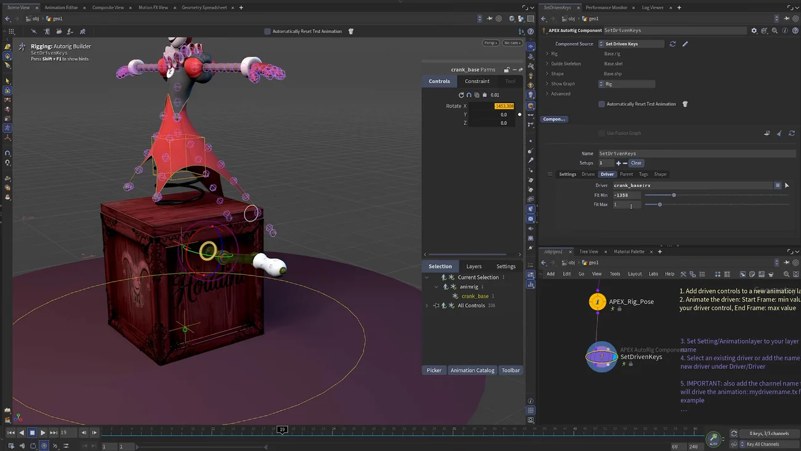

Set Driven Key — クランクを回すと蓋が開くリグを作る
出典: Houdini 22 | How to Use Set Driven Keys （SideFX 公式「Houdini 22 How-To」の1本 / Houdini 22 / 6:19 / 英語）。 このページは、上記の動画を見ながら自分用にまとめた日本語の学習メモです。SideFX 公式の翻訳ではありません。
題材が良い回です
びっくり箱（jack-in-the-box）のリグで、クランクを回すと蓋が開くという機構を作ります。 「あるコントロールの動きが別の動きを駆動する」という Set Driven Key の意味が、そのまま形になっている例です。
Foundations のレッスン6でも Set Driven Key を使っていますが、 あちらは転がりとスクワッシュ、こちらは機構なので、 両方見ると理解が固まると思います。
1. 駆動される側を作る
- Set Driven Key レシピを配置すると必要なノードが一式置かれます。 レシピ自身がネットワーク内に手順メモを書いてくれているので、それを読みながら進められます
- 新しく登場した APEX Rig Pose ノードを使います。 auto rig component 無しで APEX リグをテストできるのが利点で、レストポーズの設定などもできます
rotate の * を消す
既定では rotate が * になっていて、
リグの全ジョイントを拾って promote してしまいます。これを消します。
必要なのは蓋のコントロール1つだけです。
ここは最初に引っかかるところだと思います。全部のジョイントが上がってくると、 どれが目的のものか分からなくなります。
蓋のアニメーションを付ける
- 蓋のコントロールを選び、新しいレイヤーに追加して
box_openと命名します - 全コントロールを隠してから、選択中のものだけ表示すると作業しやすくなります
Shift+Rで全回転チャンネルを扱えるようにし、蓋を開くアニメーションを付けます- 少しフォロースルーを入れて、テンポを詰めます
2. 駆動する側を繋ぐ
ステートを抜けて Set Driven Keys へ行きます。 これは新しい auto rig component で、コンポーネント一覧の中にあります。
box_openアニメーションレイヤーを指定します- ステートに入ると設定用コントロールとスライダが自動で出ます
- スライダで 0→1 とアニメーションが動きます
スライダを振り切る前に終わってしまう
最初はここでずれます。Start Frame / End Frame が合っていないのが原因です。
Rig Pose に戻ってアニメーションの終わりを確認します（この例ではフレーム 19）。 End Frame を 19 にすると、スライダの端でちょうど開き切ります。
3. クランクで駆動する
スライダではなくクランクで駆動したい場合は Driver を設定します。
クランクのコントロール名は crank_base です。

| 手順 | 内容 |
|---|---|
| 名前の取得 | Current Selection のドロップダウンからコピペするのが確実です |
| チャンネルの指定 | コロンで繋ぎます。回転 X なら crank_base:rx |
チャンネルをコロンで指定するのがこの回で覚えるべき書き方です。 コントロール名だけでは足りません。
一瞬で開き切ってしまう問題
そのままだと一瞬で開き切ります。回転 X が 0→1 の範囲にすぐ到達してしまうためです。
直すには Fit Minimum / Fit Maximum を使います。
- クランクを何回も回して、そのときの回転値をコピーして Fit Min に貼ります （小数を落として整数にすると読みやすくなります）
- さらに回して同様に Fit Max に貼ります
これでクランクを回すと蓋が徐々に開きます。 クランクをアニメートすれば蓋の開閉も自動で付いてきます。
「実際に動かして値を見てから Fit に入れる」というやり方が実用的だと思います。 計算するより回してみるほうが早いです。
この回のまとめ
- Set Driven Key レシピを置くと一式揃い、レシピ自身が手順メモを書いてくれます
- APEX Rig Pose は auto rig component 無しでリグをテストできます
- rotate の
*は消します。全ジョイントを promote してしまうためです - 全コントロールを隠して選択中だけ表示すると作業しやすくなります
- スライダを振り切る前に終わるのは End Frame が合っていないだけです。Rig Pose 側で終端フレームを確認します
- Driver はコロンでチャンネルを指定します（
crank_base:rx）。名前はドロップダウンからコピペが確実です - 一瞬で開き切るのは Fit Minimum / Fit Maximum で直します。実際に回した値をコピーして貼ります